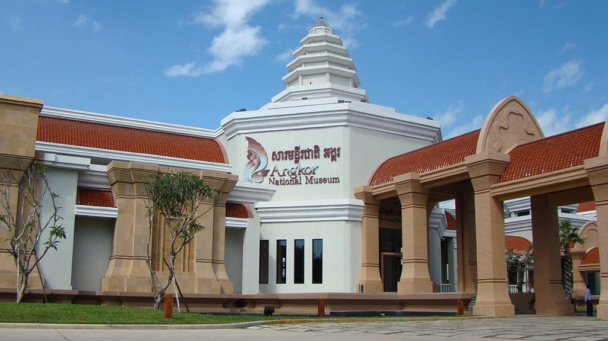

Siem Reap

Siem Reap (Khmer: ក្រុងសៀមរាប) is the capital city of Siem Reap
Province in northwestern Cambodia. Siem Reap has colonial and
Chinese-style architecture in the Old French Quarter and around
the Old Market. In the city, there are museums, traditional Apsara
dance performances, a Cambodian cultural village, souvenir and
handicraft shops, silk farms, rice paddies in the countryside,
fishing villages and a bird sanctuary near the Tonle Sap Lake, and
a vibrant, cosmopolitan drinking and dining scene. Siem Reap
today—being a popular tourist destination—has many hotels,
resorts, restaurants, and businesses closely related to tourism.
This is much owed to its proximity to the Angkor temples, the most
popular tourist attraction.

Pubstreet
Pub Street (Khmer: ផាប់ស្ទ្រីត) is the most famous nightlife area in Siem Reap, located in the Old French Quarter.
It is full of restaurants, bars, clubs, and street food, attracting both locals and tourists for evening entertainment.
See More

Royal Residence
Royal Residence (Khmer: ព្រះរាជដំណាក់ ឬ វាំងចាស់នៅខេត្តសៀមរាប) is a historic and cultural landmark located in the center of Siem Reap town.
It has been used as a royal residence by Cambodian kings during their visits to the province, particularly during the reign of King Norodom Sihanouk.
Surrounded by the Royal Gardens, the residence holds great symbolic value as a place of heritage and tradition.
Although the interior is not open to the public, the site remains an important part of Siem Reap’s history and is admired by visitors for its architecture and cultural significance.
See More
Old Market (Psar Chas)
Psah Chas (Khmer: ផ្សារចាស់ lit. 'Old Market'), also commonly romanized as Phsar Chas, Psar Chas or Psar Chaa, is a market in Siem Reap in northern Cambodia. Not to be confused with the similarly named Psah Chas in Phnom Penh that is geared toward locals,
this market in the south of the city caters to locals and tourists alike. The market is such a fixture in Siem Reap that many businesses give their address in relation to Psah Chas.
See More

Angkor Night Market
Angkor Night Market is a popular evening market. It offers handicrafts, clothes, souvenirs, and street food, making it a lively spot for shopping and relaxing at night.
Angkor Night Market is Siem Reap’s most renowned shopping venue, housing over 200 bamboo huts selling a wide range of clothing and handicrafts by local communities and non-governmental organizations.
Located in downtown Siem Reap, this outdoor market was established in 2007 to help preserve traditional Khmer handicrafts and improve the lives of Khmer people.
See More
Siem Reap River
Siem Reap River (Khmer: ទន្លេសៀមរាប) flows through the heart of Siem Reap town, providing life and charm to the city.
The riverbanks are often decorated with gardens and bridges, serving as a peaceful place for walking and relaxation.
See More

Kompong Phluk
Angkor National Museum (Khmer: សារមន្ទីរជាតិអង្គរ) is an archaeological museum in Siem Reap, Cambodia. It is dedicated to the collection, preservation and presentation of Angkorian artifacts, also to provides information and education about art and culture of Khmer civilization, with collections mainly dated from Khmer Empire's Angkor period circa 9th to 14th-century.
Most of the artifacts are discovered in and around the Angkor archaeological sites nearby.
See More

Made in Cambodia Market
Made in Cambodia Market (Khmer: ផ្សារទំនិញផលិតនៅកម្ពុជា) is a creative artisan market that showcases Cambodian-made handicrafts, art, fashion, and souvenirs.
It supports local artisans and offers visitors authentic products rooted in Khmer culture.
The Made in Cambodia Market focuses on locally made products. Visitors can find handmade crafts, artworks, clothes, and jewelry made by Cambodian artisans.
See More
Wat Damnak
Wat Damnak (Khmer: វត្តដំណាក់) is a historic Buddhist pagoda located near the Siem Reap River.
It serves as a spiritual center, a place for meditation, and also houses a cultural center and library for preserving Khmer traditions.
See More


Jonh Doe
Wow Greate!